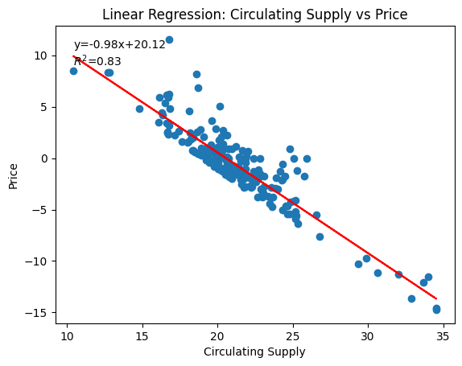
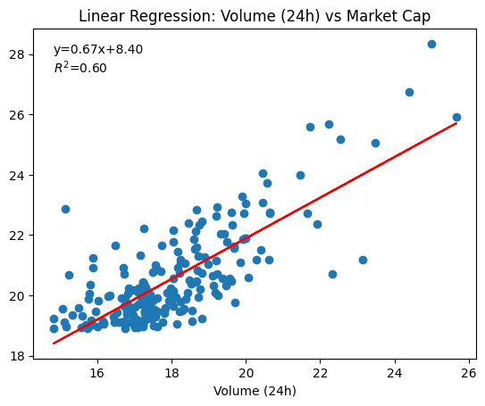
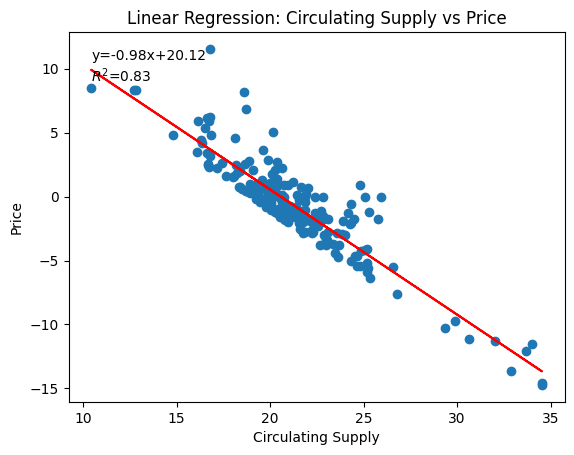
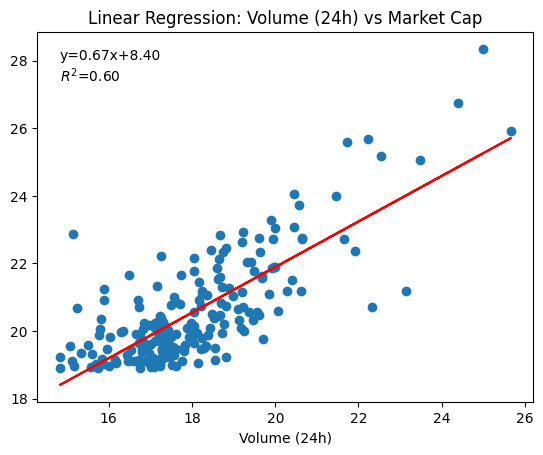

Data Acquisition and Exploratory Data Analysis
Why Dive Into Crypto?
If you’ve been anywhere near the financial world lately, you know crypto isn’t just a buzzword; it’s a full-blown phenomenon. From Bitcoin hitting jaw-dropping highs to meme coins making headlines, the crypto market is fast, unpredictable, and fascinating. It’s not like traditional stocks that sleep on weekends; this market runs 24/7, and every hour can bring a new twist. Interestingly, my brother recently bought some Dogecoin and has actually made a solid profit from it.
So why analyze the top 200 cryptocurrencies? Simple: this is where the action is. These coins represent the biggest players in the game, with massive market caps, enormous trading volumes, and trends that ripple across the entire ecosystem. By digging into metrics like price changes, market cap, 24 hour change, 7 day change, and trading volume, we can uncover patterns that tell us who’s leading, who’s lagging, and where the next big move might come from.
Whether you’re an investor looking for insights, a data enthusiast who loves spotting trends, or just curious about what drives this digital gold rush, this dataset is a goldmine. We’ll explore volatility, momentum, and adoption signals, all through the lens of real numbers. Think of it as decoding the heartbeat of the crypto world.
What Am I Hoping to Learn?
When I look at this dataset, I’m curious about the relationships hiding in the numbers. Are there interesting correlations between variables like price, market cap, and trading volume? What do the extremes look like, who’s sitting at the top and bottom for each metric? I also want to dive into the shape of the data: how do these distributions look in their raw form, and what happens when we transform them? I’m hoping to explore whether any linear regressions between variables reveal intriguing patterns or unexpected insights.
Before scraping data from CoinMarketCap, I checked their terms of service to confirm that accessing publicly available information for non commercial, educational purposes was allowed. I only collected data that was already visible on their site, with no hidden endpoints or private APIs, and I kept the requests minimal to avoid putting unnecessary load on their servers. In other words, I followed good scraping practices: no aggressive crawling, no bypassing restrictions, and no storing sensitive user data. The goal was simply to gather market stats that anyone could view on the site, and to do it in a way that respects the platform and its resources.
How I Got the Data (And How You Can Too)
Getting this dataset was easier than you might think. CoinMarketCap provides a public API that lets you pull cryptocurrency data without scraping individual pages. I used Python with the requests library to make a simple GET request to their API, asking for the top 200 coins sorted by market cap. Once the data came back in JSON format, I extracted key details like name, symbol, price, market cap, 24 hour and 7 day changes, and trading volume. From there, I built a Pandas DataFrame and saved it as a CSV file for analysis. If you want to try something similar, all you need is: • A public API endpoint (CoinMarketCap has one) • Python with requests and pandas • A few lines of code to fetch, clean, and save the data It’s a great way to start exploring real world financial data without diving into complex scraping or paid data sources.
EDA Highlights: What Did We Find?
The final dataset includes 200 cryptocurrencies with six key variables: Name, Price, 7 day Change (%), Market Cap, Volume (24h), and Circulating Supply. All columns are complete with no missing values, which made analysis straightforward. When we looked at summary statistics, the numbers told an interesting story. Prices range from fractions of a cent (as low as $0.0000004) to over $102,000 for Bitcoin. Market caps span from about $162 million to more than $2 trillion, and 24 hour trading volumes vary from a few million to nearly $140 billion. The median price is just $0.58, showing how most coins are far below the giants like Bitcoin and Ethereum. Distributions were highly skewed, so log transformations helped reveal patterns. Market cap and volume both showed heavy right tails, dominated by a few massive players. Correlation analysis uncovered some fascinating relationships: • Price vs Circulating Supply had a strong negative correlation (-0.98), which makes sense since coins with huge supply tend to have lower prices. A linear regression confirmed this with an impressive R² of 0.83. • Market Cap vs Volume (24h) showed a positive correlation (0.67) and a decent regression fit (R² ≈ 0.60), meaning bigger coins generally see more trading activity. The most surprising insight? The crypto world is extremely top heavy. A handful of coins dominate market cap and volume, while the majority trade at tiny prices with relatively small liquidity. These patterns highlight the volatility and inequality in the crypto ecosystem, offering plenty of room for deeper analysis.
Exploratory Data Analysis (EDA) at a Glance
Summary Statistics
Total Sample Size:
The dataset contains 200 cryptocurrencies, each with six variables: Name, Price, 7-day Change (%), Market Cap, Volume (24h), and Circulating Supply.
Counts of Categorical Variables:
Name and Symbol are categorical, with 200 unique entries (one for each cryptocurrency). There are no missing values in any column.
Summaries of Numeric Variables:
Price:
Min: $0.0000004 Max: $102,971 Mean: $616.87 Median: $0.58 Highly skewed toward a few very high-priced coins like Bitcoin.
Market Cap:
Min: $161.86 million Max: $2.05 trillion Mean: $17.18 billion Median: $527.63 million Heavy right tail dominated by Bitcoin and Ethereum.
Volume (24h):
Min: $2.75 million Max: $139.76 billion Mean: $1.63 billion Median: $47.18 million.
Circulating Supply:
Min: 33,949 Max: 999,990,000,000,000 Mean: 16.5 trillion Median: 1.04 billion Extremely skewed due to tokens with massive supply.
Summary Graphics
Here are some key visualizations from the EDA:  Figure 1: Log Transformed Price Distribution
Figure 1: Log Transformed Price Distribution  Figure 2: Log Transformed Market Cap Distribution, notice the right skewed.  Figure 3: Circulating Supply vs Price Linear Regression(Log Transformed)  Figure 4: Market Cap vs Volume (24h) Linear Regression (Log Transformed)
Figure 2: Log Transformed Market Cap Distribution, notice the right skewed.  Figure 3: Circulating Supply vs Price Linear Regression(Log Transformed)  Figure 4: Market Cap vs Volume (24h) Linear Regression (Log Transformed)
Further Resources
Link to Documentation
CoinMarketCap Web Scraper for CoinMarketCap on GitHub